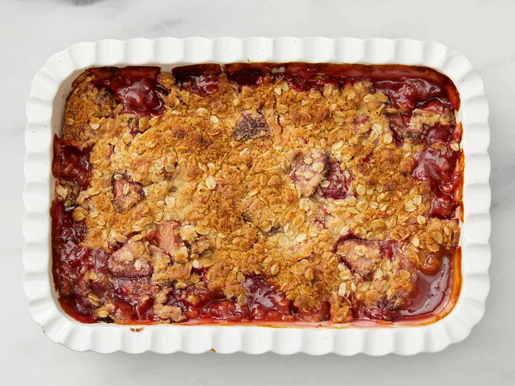

Strawberry Rhubarb Crisp

This strawberry rhubarb crisp is perfect for those who wonder what to do with that big rhubarb plant in the garden. This recipe is your answer — it will have you coming back for more!
Ingredents
Fruit Layer
- 3 cups sliced fresh strawberries
- 3 cups diced rhubarb
- 1 cup white sugar
- 3 tablespoons all-purpose flour
Crunch Topping
- 1 ½ cups all-purpose flour
- 1 cup packed brown sugar
- 1 cup rolled oats
- 1 cup butter
Steps
- Gather all ingredients.
- Preheat the oven to 375 degrees F (190 degrees C).
- Make the fruit layer: Mix strawberries, rhubarb, white sugar, and flour together in a large bowl. Place the mixture in a 9x13-inch baking dish.
- Make the topping: Combine 1 1/2 cups flour, brown sugar, oats, and butter and mix until crumbly. You may want to use a pastry cutter for this. Sprinkle on top of the rhubarb and strawberry layer.
- Bake in the preheated oven until crisp and lightly browned, about 45 minutes.
Go back